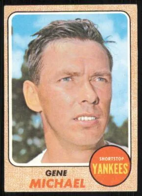

Gene Michael "Stick"
Career Highlights & Facts
(Facts are AI-generated and may require verification)
- This individual is the only person to have served as a player, scout, manager, and general manager for the same historic organization.
- He was a master of the 'hidden ball trick,' successfully executing the maneuver five times during his playing career.
- He was a standout collegiate basketball star who was once compared to a legendary Hall of Fame guard, and he famously lamented not pursuing a professional career on the hardwood.
Would you like to find out more about Gene Michael?
Career Totals
| WAR | AB | H | HR | BA | R | RBI | SB | OBP | SLG | OPS | OPS+ |
|---|---|---|---|---|---|---|---|---|---|---|---|
| 0.0 | 2806 | 642 | 15 | .229 | 249 | 226 | 22 | .288 | .284 | .572 | 67 |
Statistics via Baseball-Reference.com
The Original Clue